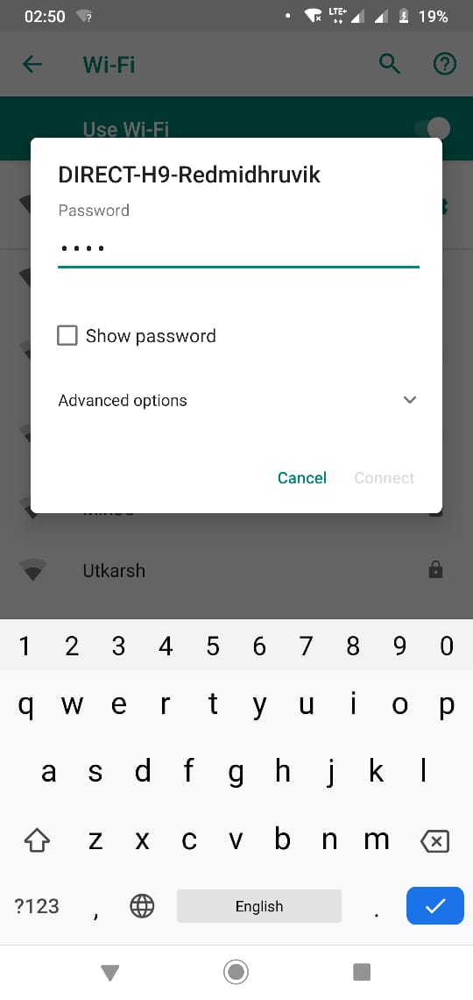
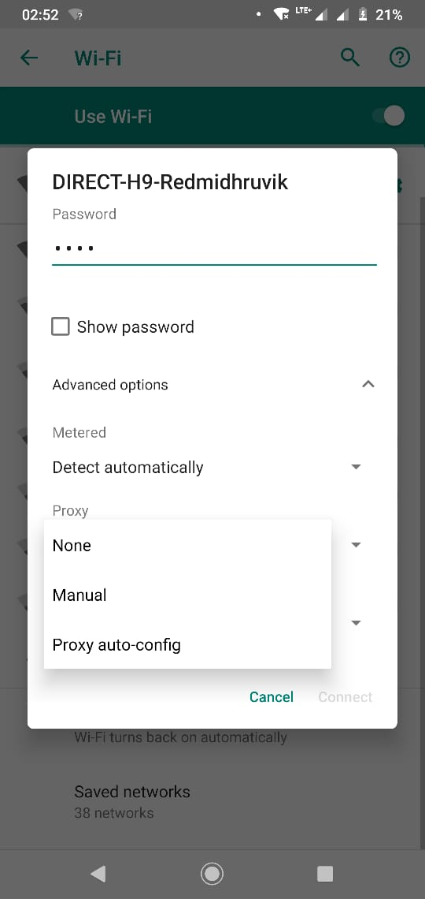
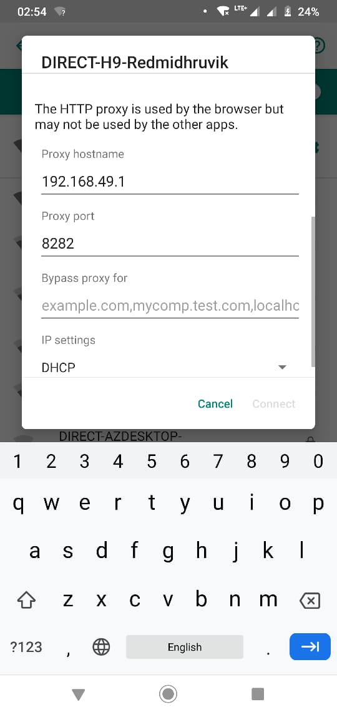

First get connected to DIRECT-hostname network using given password.
Go to advanced option and configure proxy setting to manual.
Add proxy hostname as 192.168.49.1 and proxy port as 8282(as shown in proxy server). For few phones you are supposed to add password again.
